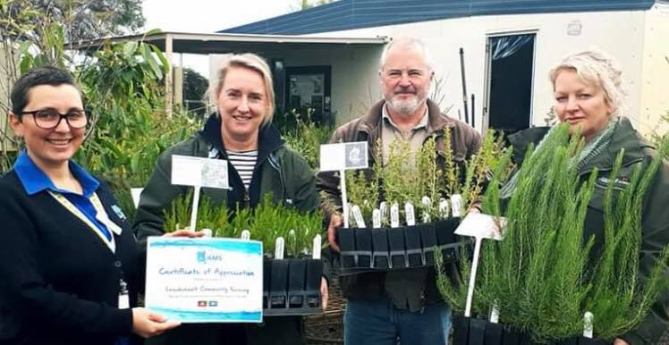

Who We Are
Managed by a committee of volunteers, the Leschenault Community Nursery has operated continuously since 1998.
The great vision driving all work at the nursery is for the conservation of the great diversity of native plants and animals in our region to be assured.
It's a big vision and we are just one playing in achieving it.

Our provision of local plants - the task we have set ourselves to contribute to this goal -
is made possible by the many willing volunteers who do all the things required to produce healthy seedlings.
From collecting the seed in the bush to helping load the delivery vehicles with ready-to-plant seedlings on collection days.

We are dedicated to encouraging the use of local native species in the revegetation and rehabilitation of land, waterways,
wetlands and coastal areas in the South West of Western Australia.

To do this, we supply south west native plants to a wide range of clients from local shires,
farmers and small landholders and urban households.

We grow to order. On average we grow over 150,000 plants annually and this includes over 200 different species.
We grow these plants from either seeds or cuttings, most collected locally by our fantastic team of volunteers.